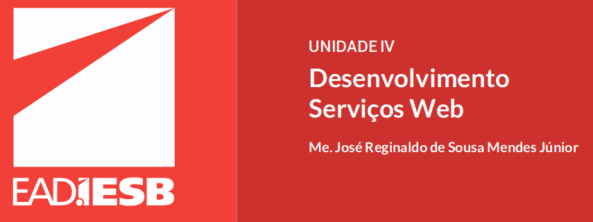

Java API for XML Web Services
Java API for XML Web Services (JAX-WS) é uma biblioteca que permite construir serviços webe clientes que se comunicam por meio da linguagem XML. É com ela que os desenvolvedoresJava implementam seus serviços web síncronos e assíncronos (ORACLE, 2013a).Como aprendemos em aulas anteriores, toda a comunicação envolvendo um serviço web e umcliente é realizada através do protocolo SOAP, onde as mensagens são armazenadas em umenvelope XML.A vantagem de se trabalhar com a API JAX-WS é que ela simplifica toda a manipulação dosenvelopes SOAP.Por exemplo, quando um cliente faz uma chamada remota a uma operação de serviço web émontado um envelope da mensagem de entrada. Essa mensagem é então transportada viaHTTP até o serviço web. Este, por sua vez, precisa interpretar, validar e transformar aAula 011mensagem em um objeto Java que será utilizado pelo método que implementa a operação doserviço web. O mesmo procedimento acontece no caminho inverso, onde o serviço webresponde ao cliente montando um envelope da mensagem de saída. A figura a seguir ilustrabem a comunicação entre um cliente e um serviço web implementados com a API JAX-WS.
#Anotações JAX-WS
@WebService: Define que uma bvclasse implementa um serviço web. (tem como objetivo marcar uma classe Java como um aimplementação de um serviço web ou uma interface como uma descrição de um serviço web.)
@WebMethod: Define que um método da classe implementa uma operação de um serviço web.E la permite que um método da classe queimplementa o serviço web seja exposto como uma operação desse serviço)
@WebParam: Define que um parâmetro é a mensagem de entrada de uma operação de um serviço web (é usada para customizar o mapeamento de um simples parâmetro deum método com uma mensagem de entrada da operação)
@WebResult: Define que um retorno é a mensagem de saída de uma operação de um serviço web. (é usada para customizar o mapeamento do retorno de um métodocom uma mensagem de saída da operação)
@WebServiceClient: Define que uma classe implementa um cliente de um serviço web. (é usada para identificar univocamente um serviço web queserá acessado pelo cliente)
@WebEndpoint: Define que o método da classe é uma operação de um serviço web. (é usada para identificar univocamente uma porta do serviçoweb que será acessada pelo cliente)
#Java Architetcure for XML Binding
A especificação Java Architecture for XML Binding (JAXB) é uma biblioteca que provêcomponentes e ferramentas para automatizar o mapeamento entre um documento XML eSAIBA MAISCaso você não esteja utilizando esse servidor de aplicação, você pode obter a versãomais recente do Metro lendo o QRCode a seguir. Outra implementação bastante conhecida da JAX-WS é o Axis2 produzida pelaApache e que pode ser obtida lendo o QRCode a seguir.SAIBA MAISEstudantes, leia o QRCode a seguir e obtenha o Apache CXF.8 objetos Java (ORACLE, 2013b). Essa API é incorporada a JAX-WS para permitir a manipulaçãode dados no formato XML pelos serviços web.
#Transfeencia do Estado Representativo
Representational State Transfer ou simplesmente REST, como se tornou mais conhecido, é umestilo arquitetural de software para sistemas distribuídos que foi elaborado por Roy Fieldingcomo tese de doutorado, e que depois passou a ser empregado no desenvolvimento deserviços web. O objetivo desse estilo é projetar aplicativos fracamente acoplados que contamcom recursos acessados por um interface única. O termo REST é usado também paradescrever qualquer interface que transmita dados de um domínio específico sobre HTTP sem uma camada adicional de mensagem como envelope SOAP e sessão de cookies.
#REST
REST enxerga cada aplicação como um conjunto de recursos, que representam um estadoparticular (RONDON, 2010). Para requisitar um recurso, é utilizado um conjunto limitado efixo de ações bem definidas. Ao acessar esse recurso estamos transferindo uma representaçãodele para que possamos manipular seu conteúdo (ex.: quando solicitamos uma lista deprodutos em uma aplicação de comércio eletrônico recebemos como resultado uma páginaHTML)
#Elementos de REST
O principal elemento da arquitetura REST é o recurso.Um recurso é um mapeamento conceitual para um conjunto de entidades. Ou seja, qualquerinformação que pode ser referenciada por hipertexto: um documento, uma imagem, umserviço, um objeto e assim por diante (FIELDING, 2000). É comum nomear um recurso com usode substantivos (ex.: aluno, empréstimo, venda). Cada recurso precisa ter um identificadorúnico (URI) para que seja localizado e requisitado.A representação é outro elemento importante da arquitetura REST. Ela corresponde aosmetadados sobre o estado corrente de um recurso, ou seja, a forma como um recurso vai serdevolvido para o cliente. Um recurso pode ter uma ou mais representações onde cadarepresentação pode ter um formato específico (ex.: HTML, XML, texto puro, etc.).
#Serviçoes RESTful
Serviços RESTful são serviços web construídos com o estilo arquitetural REST. Essa tecnologiasurgiu como uma solução alternativa ao uso de tecnologias baseadas em SOAP e WSDL para aimplantação de serviços na Internet.Por ser mais leve e ter a capacidade de transmitir dados diretamente via HTTP, serviçosRESTful são recomendados em aplicações móveis, onde o custo na troca de mensagens é elevado; em redes sociais, os quais são baseados em recursos; e serviços de busca quetrabalham com um alto tráfego de informações
#Troca de Mensagens
A troca de mensagem envolvendo serviços RESTful é totalmente baseada nos métodos GET,POST, PUT e DELETE do protocolo HTTP. A tabela a seguir mostra um típico mapeamentoentre os métodos do HTTP com as ações de um cadastro.
#JavaScript Object Notation
JavaScript Object Notation, ou JSON, é um modelo para armazamento e transmissão deinformações no formato texto que se popularizou entre as aplicações Web devido à suacapacidade de estruturar informações ser bem mais simples e compacta do que um XML,sendo ideal para aplicações móveis.Uma informação é representada pelo JSON através do par campo:valor, por exemplo,"nome":"Maria Aparecida". Quando de trata de representar objetos complexos como objetos earray são utilizados os caracteres {} e [], em que os pares campo:valor são separados porvírgulas.
#Java API for RESTful Web Services
#RMI
Java API for RESTful Web Services (JAX-RS) é uma biblioteca projetada para facilitar odesenvolvimento de aplicações que utilizam a arquitetura REST (ORACLE, 2013b). Essadefinição deixa bem claro que JAX-RS não é exclusiva para o desenvolvimento de serviçosRESTful, e sim qualquer tipo de aplicação que foi projetada no padrão arquitetural REST. Bastadefinir as classes quer irão atuar como recursos.Mesmo sendo possível implementar um serviço RESTful utilizando outras tecnologias, como aAPI Java Servlets que foi estudada na Unidade 1 desta disciplina, é muito mais fácil trabalharcom a API JAX-RS que apresenta as seguintes vantagens em relação às demais bibliotecas
Reconhecimento do método HTTP invocado
Devolução de um recurso em um formato específico;
Identificação do formato desejado pelo cliente;
Conversão automática de tipos (XML, JSON, HTML, etc.).
#Implementação da JAX-RS
Há diversas implementações da especificação JAX-RS. As mais conhecidas são: Jersey,RESTeasy e Apache CXF.A biblioteca Jersey é a implementação de referência da especificação JAX-RS produzida pelaOracle, que já vem instalada junto com o servidor de aplicação GlassFish. Mas ela pode serobtida separadamente através do endereço a seguir, se assim desejar. Nas aulas práticas,implementaremos serviços e clientes RESTful utilizando essa biblioteca